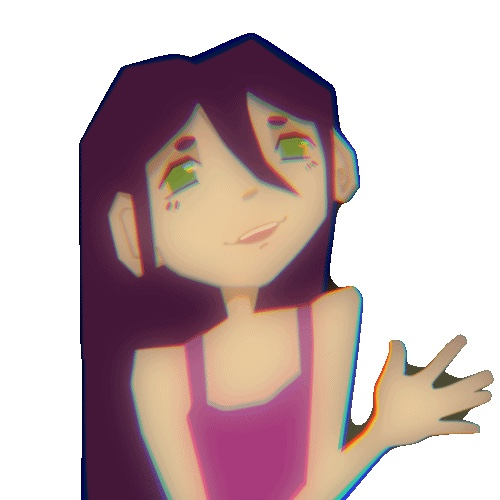

Lift↻ loop

Animation archive
my little animations.
Loops, experiments, and things I've made.
Walk↻ loop
Taking Flight↻ loop
Cycle↻ loop
Featured animation
Weapons Testing Lab · Full animation with sound · 1:10

Loops, experiments, and things I've made.